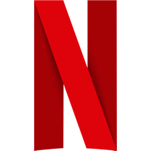
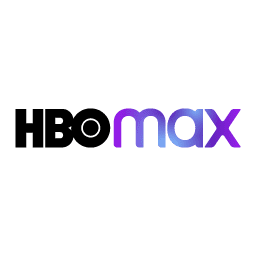
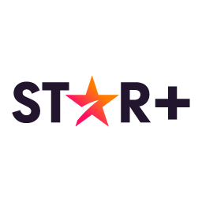

Estrenos en Abril 2022
Listas de las principales series y películas que se estrenan
en las diferentes plataformas existentes.
Netflix

- Élite(temporada 5) - 8 de Abril
- Russian Doll (temporada 2) - 20 de abril
- Ozark (temporada 4, parte 2) - 29 de abril
- Grace and Frankie (temporada 7, parte 2) - 29 de abril
Amazon Prime Video
- El internado: Las Cumbres (temporada 2) - 1 de abril
- Madres. Amor y vida (temporada 4) - 8 de abril
- Días mejores (estreno) - 22 de abril
HBO Max

- Tokyo Vice (estreno) - 8 de abril
- The Flight Attendant (temporada 2) - 22 de abril
- Barry (temporada 3) - 25 de abril
- Pares y nones (temporada 2) - 29 de abril
Star plus

- Terapia alternativa (estreno) - 6 de abril
- The Dropout: auge y caída de Elizabeth Holmes (estreno) - 20 de abril